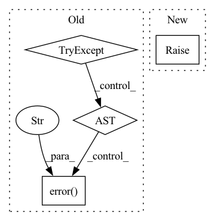

Pattern ID :20211
Before Change
hubapi_yml = JAML.load(fp)
hubapi_url = hubapi_yml["hubapi"]["url"] + hubapi_yml["hubapi"]["docker_auth"]
try:
with ImportExtensions(
required=True,
help_text="missing "requests" dependency, please do pip install "jina[http]"",
):
import requests
headers = {
"Accept": "application/json",
"authorizationToken": _fetch_access_token(logger),
}
response = requests.get(url=f"{hubapi_url}", headers=headers)
if response.status_code != requests.codes.ok:
logger.error(
f"failed to fetch docker credentials. status code {response.status_code}"
)
json_response = json.loads(response.text)
username = base64.b64decode(json_response["docker_username"]).decode("ascii")
password = base64.b64decode(json_response["docker_password"]).decode("ascii")
logger.debug(f"Successfully fetched docker creds for user")
return username, password
except Exception as exp:
logger.error(f"got an exception while fetching docker credentials {exp!r}" )
def _register_to_mongodb(logger, summary: Optional[Dict] = None):
Hub API Invocation to run `hub push`.After Change
}
response = requests.get(url=f"{hubapi_url}", headers=headers)
if response.status_code != requests.codes.ok:
raise HubLoginRequired(
f"❌ Failed to fetch docker credentials. status code {response.status_code}"
)
json_response = json.loads(response.text)In pattern: SUPERPATTERN
Frequency: 4
Non-data size: 4
Instances Fragment ID: 65914521
Project Name: jina-ai/jina
Commit Name: 19da13c16f686296e1a7f0e97cba0b3469cf129d
Time: 2021-03-23
Author: deepankar.mahapatro@jina.ai
File Name: jina/docker/hubapi/remote.py
M Class Name: AnonimousClass
N Class Name: AnonimousClass
M Method Name: _fetch_docker_auth(1)
N Method Name: _fetch_docker_auth(1)
M Parent Class:
N Parent Class:
M File Name: jina/docker/hubapi/remote.py
N File Name: jina/docker/hubapi/remote.py
M Start Line: 77
M End Line: 110
N Start Line: 79
N End Line: 108
Before Change
_kind = "pea"
def _add(self):
try:
self._logger.debug(
f"sending POST request to mini-jinad on {self.host}/{self._kind}"
)
r = requests.post(url=f"{self.host}/{self._kind}", json=self.params)
if r.status_code != requests.codes.created:
raise Runtime400Exception(
f"{self._kind.title()} creation failed: {r.json()}"
)
return r.json()
except requests.exceptions.RequestException as ex:
self._logger.error(f"{ex!r}" )
raise Runtime400Exception(
f"{self._kind.title()} deletion failed. request timed out"
)
After Change
) as response:
response_json = await response.json()
if response.status != HTTPStatus.CREATED:
raise Runtime400Exception(
f"{self._kind.title()} creation failed: {response_json}"
)
return response_json Fragment ID: 65914520
Project Name: jina-ai/jina
Commit Name: 5082c49ebcf70b070f96682b7e1766c17822253b
Time: 2021-07-15
Author: deepankar.mahapatro@jina.ai
File Name: daemon/stores/peas.py
M Class Name: PeaStore
N Class Name: PeaStore
M Method Name: _add(3)
N Method Name: _add(1)
M Parent Class: ContainerStore
N Parent Class: ContainerStore
M File Name: daemon/stores/peas.py
N File Name: daemon/stores/peas.py
M Start Line: 12
M End Line: 29
N Start Line: 17
N End Line: 37
Before Change
logging.warning(f"Output file {args.out} already exists.")
// Set up device
try:
args.device = set_device(args.device)
except RuntimeError as err:
logging.error(f"Could not select processing device: {args.device}" )
raise err
if "inference".startswith(args.phase.lower()):
// Default inference: eggNOG5 bacteria levelAfter Change
// Better safe than sorry -- don"t overwrite existing files
if args.out is not None and Path(args.out).is_file():
raise FileExistsError(f"Output file {args.out} already exists.")
// Set up device
args.device = set_device(args.device) Fragment ID: 65914523
Project Name: univiecube/deepnog
Commit Name: 946ccb3d4697400e0125a8ae38033cb8bc17960b
Time: 2020-06-15
Author: sci@feldbauer.org
File Name: deepnog/client/client.py
M Class Name: AnonimousClass
N Class Name: AnonimousClass
M Method Name: _start_prediction_or_training(1)
N Method Name: _start_prediction_or_training(1)
M Parent Class:
N Parent Class:
M File Name: deepnog/client/client.py
N File Name: deepnog/client/client.py
M Start Line: 231
M End Line: 264
N Start Line: 234
N End Line: 243
Before Change
hubapi_yml = JAML.load(fp)
hubapi_url = hubapi_yml["hubapi"]["url"] + hubapi_yml["hubapi"]["push"]
try:
with ImportExtensions(
required=True,
help_text="missing "requests" dependency, please do pip install "jina[http]"",
):
import requests
headers = {
"Accept": "application/json",
"authorizationToken": _fetch_access_token(logger),
}
response = requests.post(
url=f"{hubapi_url}", headers=headers, data=json.dumps(summary)
)
if response.status_code == requests.codes.ok:
logger.info(response.text)
elif response.status_code == requests.codes.unauthorized:
logger.critical(
f"user is unauthorized to perform push operation. "
f"please login using command: {colored("jina hub login", attrs=["bold"])}"
)
elif response.status_code == requests.codes.internal_server_error:
logger.critical(
f"got an error from the API: {response.text}. If there are any authentication issues, "
f"please remember to login using command: "
f"{colored("jina hub login", attrs=["bold"])}"
)
except Exception as exp:
logger.error(f"got an exception while invoking hubapi for push {exp!r}" )
After Change
if response.status_code == requests.codes.ok:
logger.success(f"✅ Successfully updated the database. {response.text}")
else:
raise HubLoginRequired(
f"❌ Got an error from the API: {response.text.rstrip()}. "
f"Please login using command: {colored("jina hub login", attrs=["bold"])}"
) Fragment ID: 65914522
Project Name: jina-ai/jina
Commit Name: 19da13c16f686296e1a7f0e97cba0b3469cf129d
Time: 2021-03-23
Author: deepankar.mahapatro@jina.ai
File Name: jina/docker/hubapi/remote.py
M Class Name: AnonimousClass
N Class Name: AnonimousClass
M Method Name: _register_to_mongodb(2)
N Method Name: _register_to_mongodb(2)
M Parent Class:
N Parent Class:
M File Name: jina/docker/hubapi/remote.py
N File Name: jina/docker/hubapi/remote.py
M Start Line: 111
M End Line: 151
N Start Line: 111
N End Line: 143